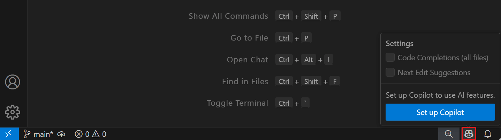
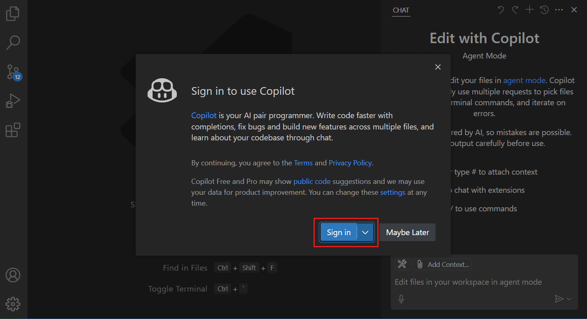
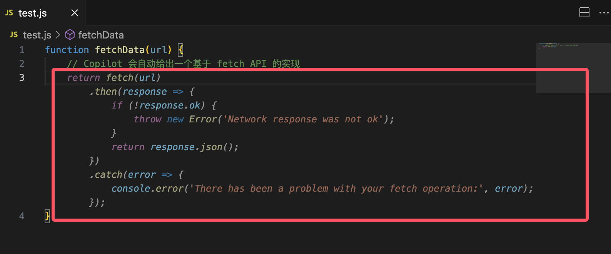

VS Code GitHub Copilot
GitHub Copilot is an AI coding assistant jointly developed by GitHub and OpenAI. It can automatically complete code based on context, generate functions, optimize logic, and even write entire code modules, helping developers code more efficiently.
GitHub Copilot is integrated into multiple IDEs such as VS Code, Visual Studio, and JetBrains, making you feel like you have an experienced partner assisting you at all times while writing code.

Core Features
Code Auto-completion
GitHub Copilot can provide real-time code suggestions based on your code context and comments. It can:
- Complete entire lines of code
- Generate complete functions
- Generate code from descriptive comments
Code Explanation
Copilot can help you understand unfamiliar code:
- Explain the functionality of complex code segments
- Provide code optimization suggestions
- Identify potential issues
Multi-language Support
Supports almost all mainstream programming languages, including:
- JavaScript/TypeScript
- Python
- Java
- C++
- Go
- Ruby, etc.
Installation and Setup
Installation Steps
Prerequisites
-
VS Code is correctly installed; it is recommended that the version be
1.116+or above. That version natively includes Copilot, so there is no need to manually install the plugin. -
A GitHub account, and you need to enable a GitHub Copilot subscription (Personal, Team, or Enterprise all work).
Install the extension (for VS Code 1.115 and earlier versions)
-
Open VS Code and go to the Extensions Marketplace.
-
Search for
GitHub Copilot。 -
Click
安装(Install)Install.
After installation, click the small icon in the upper-right corner to bring up the Copilot chat window:

You can also click the icon in the lower-right corner:

Sign in to GitHub account
-
After installation, VS Code will prompt you to sign in to your GitHub account.
-
Click
Sign in to GitHubThe browser will redirect to the GitHub authorization page; after authorization, it will automatically return to VS Code.
Enable GitHub Copilot
-
In VS Code, press
Ctrl + Shift + P, typeCopilot: Enable。 -
After confirming and enabling, you can start using it.
After installation, open VS Code settings, search for Copilot. Here we can adjust in VS Code settings:
- Suggestion trigger method (automatic or manual)
- Suggestion display position
- Language preference settings

Usage Tips
Smart Completion
When you start typing code, GitHub Copilot automatically gives suggestions, for example:
function fetchData(url) {
// Copilot 会自动给出一个基于 fetch API 的实现
}

We can press the Tab key to accept the suggestion.
If there are multiple suggestions, pressCtrl + ]orCtrl + [to switch.
-
If you don't want to use the suggestion, pressEscto dismiss.
Generate Code from Comments
Just write comments, and Copilot will help you implement them:
# Implement a quicksort algorithm

Examples
def quick_sort(arr):
if len(arr) <= 1:
return arr
pivot = arr[len(arr) // 2]
left = [x for x in arr if x < pivot]
middle = [x for x in arr if x == pivot]
right = [x for x in arr if x > pivot]
return quick_sort(left) + middle + quick_sort(right)
Generate Test Cases
You can even write comments directly and let Copilot generate tests for you:
// 为 quicksort 函数生成单元测试

Additionally, you can right-click in the editor, select Copilot, and bring up the desired features:

Shortcut Key Descriptions
| Shortcut Key | Description |
|---|---|
Tab |
Accept suggestion |
Esc |
Ignore suggestion |
Ctrl + ] |
View next suggestion |
Ctrl + [ |
View previous suggestion |
Ctrl + Enter |
Open Copilot panel |
Ctrl + Shift + P |
Enable/Disable Copilot |
Using Chat in VS Code
Using the chat feature in Visual Studio Code, you can ask questions about your codebase in natural language, or perform multi-file edits in your project. The chat feature can run in different modes according to your needs, from asking questions, making multi-file edits, to starting agentic coding workflows, all to meet your requirements.
You can use the VS Code chat feature in the following scenarios:
- Understanding code: for example, "Explain how this authentication middleware works?"Debugging issues: for example, "Why do I get a null reference in this loop?"
- Getting code suggestions: for example, "Show me how to implement a binary search tree in Python?"Optimizing performance: for example, "Help me improve the efficiency of this database query?"
- Learning best practices: for example, "What are recommended ways to handle errors in async functions?"Getting VS Code tips: for example, "How do I customize keyboard shortcuts?"
- Tip: If you don't have a Copilot subscription yet, you can use Copilot for free by signing up for the Copilot free plan, which includes a limited number of completions and chat interactions per month.Chat Modes
- Based on your specific needs, you can choose different chat modes:Mode
- DescriptionScenario
AskAsk questions about the codebase or technical concepts.
Chat Modes
Edit
| Make multi-file edits in the codebase. | Available in stable or preview versions. Apply code edits directly in your project to implement new features, fix bugs, or refactor code. | Agent |
|---|---|---|
| Start an agentic coding workflow. | Available in stable or preview versions. Autonomously implement new features or high-level project requirements with minimal guidance, call tools to perform specialized tasks, and iteratively solve problems as they arise. | You can switch between different chat modes by using the mode dropdown menu in the chat view. |
| Other Extensions | AI thinking... | VS Code Activity Bar |
| VSCode Database Client Extension | Note List | Click to Share Notes |
<p style="font-size:14px;">Notes must be an expansion of this article!</p><br> <p style="font-size:12px;"><a href="../tougao.html" target="_blank">Submit an article, click here</a></p> <p style="font-size:14px;"><a href="../w3cnote/runoob-user-test-intro.html" target="_blank">How to get a registration invitation code</a></p> <h3 class="text-muted"><i class="fa fa-info-circle" aria-hidden="true"></i> You must <a href=";.html" class="runoob-pop">log in</a> before sharing notes!</h3> <p><a href="../w3cnote/runoob-user-test-intro.html" target="_blank">How to get a registration invitation code</a></p>